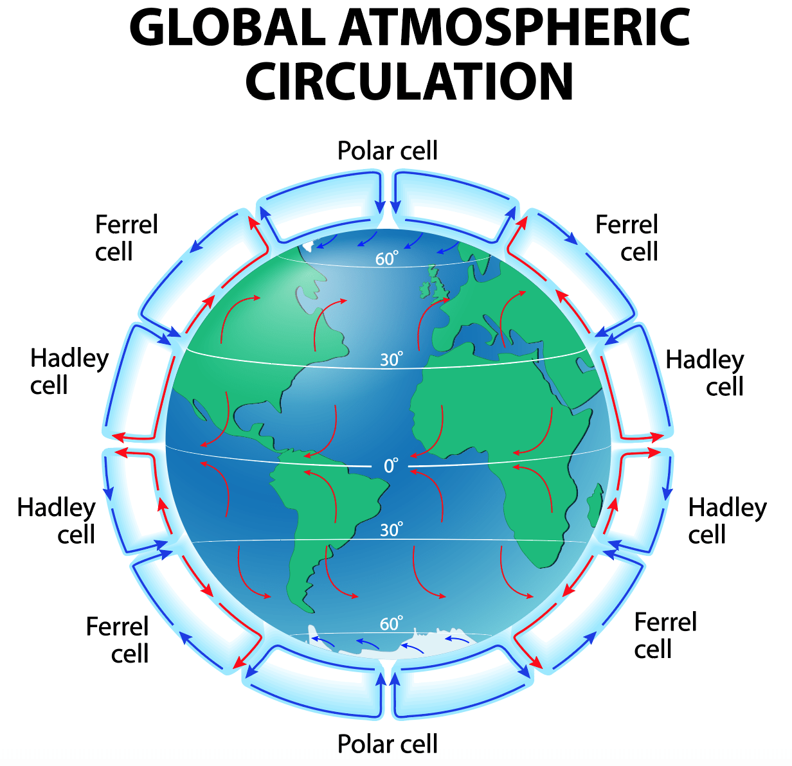

Air circulates within the troposphere (ground to 10 - 15 km)
| Cell | Where | Special Stuff |
|---|---|---|
| Hadley Cell | Equator to 30 - 40 degrees | Largest cell |
| Ferrel Cell | Edge of Hadley Cell to 60 - 70 degrees | Moves in opposite direction of the other 2 cells |
| Polar Cell | Edge of Ferrel Cell to the poles | Smallest and weakest cell |
Cells
